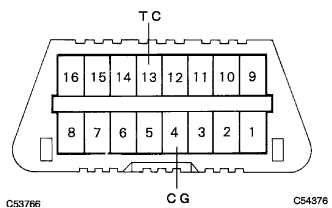

SRSエアバッグシステム ダイアグコード点検／消去 |
IGスイッチをOFF(LOCK)にする。
SSTをDLC3に接続する。
IGスイッチをON後、SSTの画面表示に従って操作を行い[ダイアグコード確認]画面を表示させ通常モードを選択しダイアグコードを読み取る。
IGスイッチをOFF(LOCK)にする。
SSTをDLC3に接続する。
IGスイッチをON後、SSTの画面表示に従って操作を行い[ダイアグコード確認]画面を表示させチェックモードを選択しダイアグコードを読み取る。
IGスイッチをOFF(LOCK)にする。
SSTをDLC3に接続する。
IGスイッチをON後、SSTの画面表示に従ってダイアグコードを消去する。
現在故障
IGスイッチをONにして、60秒間待機する。
SSTを使用して、DLC3の13(TC)←→4(CG)端子間を短絡しウォーニングランプの点滅回数を読み取る。
過去故障
SSTを使用して、DLC3の13(TC)←→4(CG)端子間を短絡する。
|  |
IGスイッチをONにして、ウォーニングランプ消灯後の点滅回数を読み取る。
SSTを使用して、DLC3の13(TC)端子←→4(CG)端子間を短絡し、IGスイッチをONにする。
ダイアグコードが出力され始めてから3秒後から10秒以内にDLC3の13(TC)端子をオープンし、3秒後にウォーニングランプが点灯するか確認する。
ウォーニングランプが点灯し始めてから2.0秒後-4.0秒以内にDLC3の13(TC)←→4(CG)端子間を短絡する。
DLC3の13(TC)←→(CG)端子間を短絡してから2.0秒後-4.0秒後にウォーニングランプが消灯し、消灯後2.0後－4.0秒以内にDLC3の13(TC)端子をオープンする。
DLC3の13(TC)端子をオープンしてから2.0秒後-4.0秒後再びウォーニングランプが点灯し、点灯後2.0秒後-4.0秒以内にDLC3の13(TC)←→4(CG)端子間を短絡する。
DLC3の13(TC)端子←→4(CG)端子間を短絡してから2.0-4.0秒後にウォーニングランプが消灯し、消灯後1.0秒以内に正常コードが出力されるか確認する。